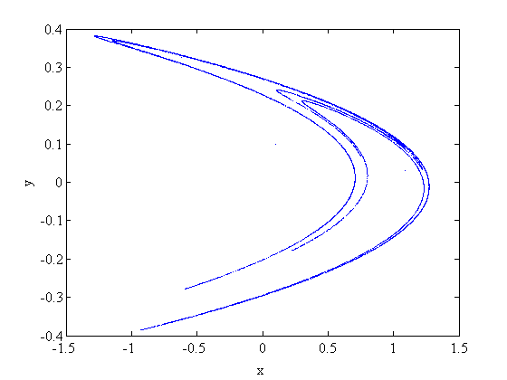
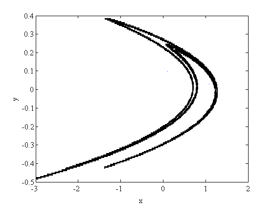

GAIO demo: Relative global attractor of the Hénon map
The Hénon map
The Hénon map is a well known example of a map which exhibits complicated dynamics . Here is a plot of its attractor for \$a=1.4\$ and \$b=0.3\$.
a = 1.4; b = 0.3; % parameters of the map f = @(x) [1-a*x(:,1).^2+x(:,2) b*x(:,1)]; % Hénon map x = [0.1 0.1]; % initial point for i=1:10000, x = [x; f(x(end,:))]; end % iteration plot(x(:,1),x(:,2),'.'); xlabel('x'); ylabel('y'); % plot of the attractor
Preparations
In order to compute a covering of the attractor, we first choose sample points in the square \$[-1,1]^\$. Here, we chose these points on the edges of the square.
n = 40; X1 = linspace(-1,1,n)'; E = ones(size(X1)); % 1d points X = [ X1 -E; X1 E; -E X1; E X1]; % sample points in \$[-1,1]^\$
and initialize the tree using the square [-3,3]^2
c = [0 0]; r = [3 3]; t = Tree(c, r);
Subdivison algorithm
We can now run the subdivision algorithm for the (relative) global attractor.
dim = t.dim; depth = 20; hit = 1; sd = 8; % define flags for i=1:depth, % subdivide up to the given depth t.set_flags('all', sd); % flag all boxes for subdivision t.subdivide; % subdivide all flaged boxes b = t.first_box(-1); % loop over leaves of the tree while (~isempty(b)) c = b(1:dim); r = b(dim+1:2*dim); % center and radius of current box p = X*diag(r) + ones(size(X))*diag(c); % sample points in current box t.set_flags(f(p)', hit); % map points and flag hit boxes b = t.next_box(-1); end t.remove(hit); % remove all boxes which have *not* been hit end
Plot of the box collection
boxplot2(t); xlabel('x'); ylabel('y');
Cleanup
delete(t);